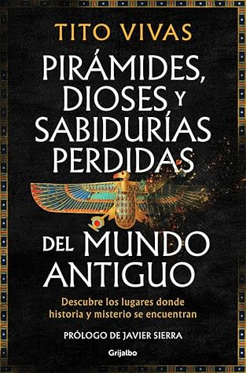

Pirámides, dioses y sabidurías perdidas del mundo antiguo
Reseña por Jorge I. Zuluaga

Ver reseña en GoodReads (necesita cuenta)
En este libro, su primero en los grandes circuitos bibliográficos comerciales, Tito hace un recorrido por varios misterios arqueológicos e históricos; algunos bastante conocidos (pirámides en casi todos los continentes, monumentos monolíticos antiguos, códices mayas perdidos) y otros no tan populares (bloques pulidos en el altiplano boliviano, piedras gigantes en templos malteses, mitos africanos con un aparente contenido astrofísico). Son misterios que, por contener elementos en la frontera del conocimiento científico, se han convertido en material de lo que Vivas llama acertadamente una «arqueología fantástica»: esa práctica seudocientífica, seudoperiodística y, en última instancia, literaria, que consiste en construir elaborados relatos para explicar esos «misterios» de manera que calen en el mayor número de personas e, indefectiblemente, hagan protagonistas a extraterrestres ancestrales, civilizaciones perdidas —atlantes o semidioses míticos— o saberes mágicos desaparecidos.
¿Dónde está la sorpresa que mencioné antes? Para quienes leen a Tito por primera vez, tal vez este será solo un libro más (¡pero qué libro!) escrito por un científico sobre los misterios del pasado y de cómo se investigan; pero, más importante aún, un libro sobre cómo esos misterios no se pueden explicar apelando simplemente a narraciones fáciles e imaginativas que no admiten preguntas ni la más mínima contrastación con las evidencias. Para las personas que hemos seguido su rastro en obras como El viaje de un egiptólogo ingenuo , Historia fabulosa de un viaje a Etiopía o Tutankhamon, Howard y yo , este texto tiene un material y un estilo muy diferente. Aunque ya se dejaba adivinar en su Guía de Egipto para piramidólogos y marcianos , aquí descubrimos al Tito divulgador de la filosofía de las ciencias, que describe de forma clara la manera en la que los humanos nos relacionamos con la «verdad» y cómo la construimos y deconstruimos de forma colaborativa.
El libro me reveló también al Tito «cuentífico»: aquel capaz de construir épicas alrededor de lo que la investigación científica de frontera sabe sobre los pueblos de la antigüedad. En este sentido, me encantó la historia final sobre el disco de Festo, que desconocía completamente. Me gustó la manera como, entre líneas, va demostrando que hay una forma de aproximarse a ese misterio (un pequeño disco de arcilla con un enigmático mensaje escrito en una lengua desconocida) que no desplaza el sentido de misterio, sino que lo reemplaza por un asombro crítico y hasta productivo (¿podría la cultura minoica haber inventado un sistema de escritura con tipos móviles mil años antes de nuestra era?). Como señala Tito: «El verdadero asombro no desaparece cuando comprendemos algo: muchas veces se multiplica».
En el libro descubrí también al Tito que, por su formación académica o simplemente por su intuición humanística, es capaz de imaginar lo que pasaba por las cabezas de las personas que construyeron monumentos, rituales o templos para ponerle orden a la implacable naturaleza de la que dependían. El capítulo 4, «Monumentos y estrellas», dedicado a la relación de los antiguos con el cielo, me llegó particularmente al alma por mi profesión como astrónomo. De alguna manera me hizo sentir parte de una tradición que se extiende hacia atrás en el tiempo hasta los pastores de Nabta Playa.
Esta obra es una combinación de buena divulgación arqueológica e historiográfica que me recordó mucho al clásico Dioses, tumbas y sabios de Ceram y a El amanecer de todo de Graeber y Wengrow. Además, es un texto bien fundamentado que hace una crítica acertada a los relatos seudocientíficos y esotéricos de la arqueología, muy en la línea de lo que leímos a maestros como Carl Sagan (El mundo y sus demonios) o Bertrand Russell (Ensayos escépticos).
El detalle de la dedicatoria inicial es una genialidad; solo lo esperaría del Tito humorista que he conocido. No les revelo más para que consigan el libro y lo descubran por su cuenta. En síntesis, este no es el libro que esperaba leer en esta primera salida al mercado masivo de uno de mis autores preferidos. Es mejor.
No sé cómo lo tomará el gran público al que va dirigido; ese que tal vez espera que un científico popular como Tito Vivas revele por fin los misterios de las pirámides o el conocimiento astronómico perdido en los códices mayas. Tal vez algunos no pasen de la introducción (¡pero qué buena introducción!) o tal vez Tito logre lo que pocos: poner a muchas personas, incluso a las que les gusta la arqueología fantástica, a leer épicas científicas de buen nivel.
Para mí es claro que quienes están apostando porque este tipo de literatura científica llegue a muchas más personas, han acertado.
¿Quieres que escriba una reseña en un lenguaje más formal? ¿O la dejamos así, independientemente de si Tito la leerá o si no lo hará?